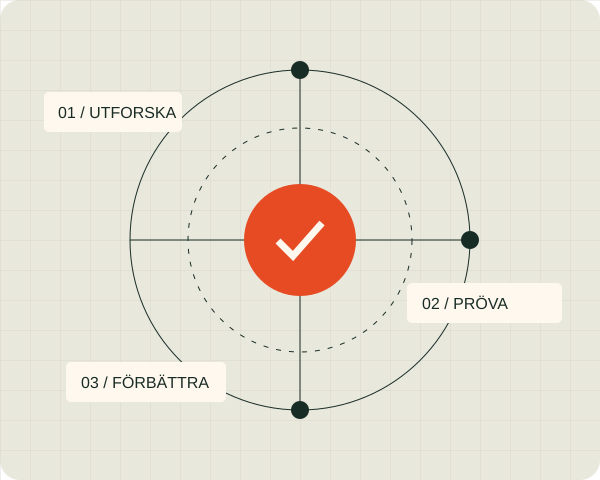

Hitta en fråga
Utgå från ett konkret problem. Exempelidéerna ger dig en startpunkt, inte färdiga svar.
EN VERKSTAD FÖR ANSVARSFULL AI
Vilken idé är värd att undersöka? Utforska AI-säkerhet, pröva dina antaganden och hitta ett konkret nästa steg.
En fristående Eshkere-inspirerad skolprototyp.

VÅR UTGÅNGSPUNKT
AI-säkerhet handlar här om att undersöka risker och begränsningar i AI-system. Labbet hjälper dig att formulera vad du vill testa, för vem och med vilken evidens.
Utgå från ett konkret problem. Exempelidéerna ger dig en startpunkt, inte färdiga svar.
Bedöm möjlig nytta, genomförbarhet och kunskapsläge. Skriv ner det du ännu inte vet.
Planera ett avgränsat experiment. Låt resultatet förändra din idé innan du skalar upp.